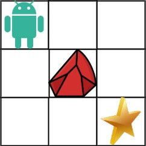

63. 不同路径 II
一维滚动 DP：逐行扫，障碍格 dp 清 0，普通格 dp[j] += dp[j-1]（旧 dp[j] 是上面来的，dp[j-1] 是左边来的）。
思路
dp[j]滚动存「走到当前行第 j 列的路径数」；起点是障碍直接 0。- 障碍格：
dp[j] = 0，这一格走不通，后面靠它的路全断。 - 普通格：
dp[j] += dp[j-1]——加号左边旧值是上来的路，dp[j-1]是左来的路。 - 答案在
dp[n-1]；第一列永远只有一条路（没障碍时），靠初值dp[0]=1传下去。
图解
最优解
1class Solution {2 public int uniquePathsWithObstacles(int[][] obstacleGrid) {3 int n = obstacleGrid[0].length;4 int[] dp = new int[n]; // dp[j]：走到当前行第 j 列的路径数5 dp[0] = obstacleGrid[0][0] == 1 ? 0 : 1; // 起点是障碍就无路可走6 for (int[] row : obstacleGrid) {7 for (int j = 0; j < n; j++) {8 if (row[j] == 1) dp[j] = 0; // 障碍格：路径数清零9 else if (j > 0) dp[j] += dp[j - 1]; // 上（旧值）+ 左（本行新值）10 }11 }12 return dp[n - 1];13 }14}题目
给定一个 m x n 的整数数组 grid。一个机器人初始位于 左上角（即 grid[0][0]）。机器人尝试移动到 右下角（即 grid[m - 1][n - 1]）。机器人每次只能向下或者向右移动一步。
网格中的障碍物和空位置分别用 1 和 0 来表示。机器人的移动路径中不能包含 任何 有障碍物的方格。
返回机器人能够到达右下角的不同路径数量。
测试用例保证答案小于等于 2 * 109。
示例 1：

输入：obstacleGrid = [[0,0,0],[0,1,0],[0,0,0]]
输出：2
解释：3x3 网格的正中间有一个障碍物。
从左上角到右下角一共有 2 条不同的路径：
1. 向右 -> 向右 -> 向下 -> 向下
2. 向下 -> 向下 -> 向右 -> 向右
示例 2：

输入：obstacleGrid = [[0,1],[0,0]] 输出：1
提示：
m == obstacleGrid.lengthn == obstacleGrid[i].length1 <= m, n <= 100obstacleGrid[i][j]为0或1
题面取自力扣当前版本。
数据快照 2026-11-04。题面版权归力扣所有，本站点仅供本人学习使用，请勿对外发布。